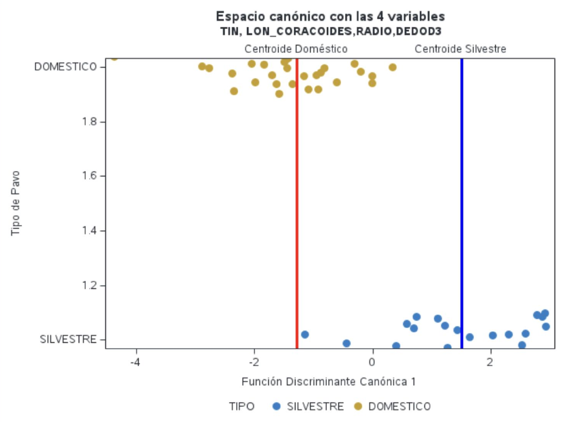
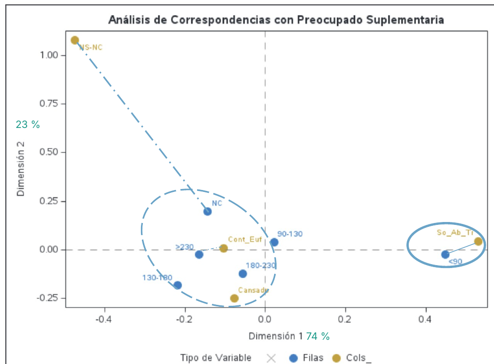
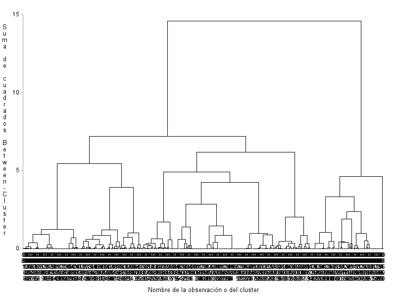

Factor analysis and PCAAnálisis factorial y ACP
Can a dozen chemical measurements of red wine be summarised by a few underlying dimensions? The data cover 1,593 wines.
¿Se pueden resumir una docena de medidas químicas del vino tinto en unas pocas dimensiones latentes? Los datos cubren 1.593 vinos.
- Bartlett's test confirmed the variables are correlated enough to factor (χ² = 275.4, against a critical value of 70.0).El test de Bartlett confirmó que las variables están lo bastante correlacionadas para factorizar (χ² = 275,4, frente a un valor crítico de 70,0).
- Dropped chlorides and total sulphur dioxide for low sampling adequacy (MSA < 0.5), raising the overall KMO to 0.65.Eliminé los cloruros y el dióxido de azufre total por baja adecuación muestral (MSA < 0,5), lo que elevó el KMO global a 0,65.
- Extracted factors by the principal factor method and kept two, by eigenvalues above one, the scree plot and the share of common variance.Extraje factores por el método del factor principal y retuve dos, según autovalores mayores que uno, el gráfico de sedimentación y la proporción de varianza común.
- Rotated them with varimax to make them easier to name.Los roté con varimax para que fueran más fáciles de interpretar.
| VariableVariable | Factor 1: acidityFactor 1: acidez | Factor 2: sensoryFactor 2: sensorial |
|---|---|---|
| Fixed acidityAcidez fija | 0.79 | 0.27 |
| Citric acidÁcido cítrico | 0.62 | 0.55 |
| pH | −0.74 | −0.16 |
| QualityCalidad | −0.10 | 0.65 |
| AlcoholAlcohol | −0.30 | 0.52 |
| Volatile acidityAcidez volátil | −0.19 | −0.62 |
Varimax-rotated loadings for the main variables.Cargas tras la rotación varimax para las variables principales.
The first factor captures the wine's acid composition; the second groups quality, alcohol and volatile acidity, so it reads as how the wine tastes. Together they explain 34% of the total variance. As a check, principal component analysis on the same data kept four components explaining 69%.
El primer factor recoge la composición ácida del vino; el segundo agrupa calidad, alcohol y acidez volátil, así que se interpreta como su sabor. Juntos explican el 34 % de la varianza total. Como comprobación, el análisis de componentes principales sobre los mismos datos retuvo cuatro componentes que explican el 69 %.
Discriminant analysisAnálisis discriminante
Can bone measurements tell a wild turkey from a domestic one? The data hold 65 turkeys (30 wild, 35 domestic), with missing measurements imputed first.
¿Pueden las medidas de los huesos distinguir un pavo silvestre de uno doméstico? Los datos recogen 65 pavos (30 silvestres y 35 domésticos), con las medidas ausentes imputadas previamente.
Backward selection kept four measurements: radius, TIN, third digit (DEDOD3) and coracoid length. The discriminant function separates the groups clearly (Wilks' λ = 0.317, F = 17.5, p < 0.0001; canonical correlation 0.83).
La selección hacia atrás retuvo cuatro medidas: radio, TIN, tercer dedo (DEDOD3) y longitud del coracoides. La función discriminante separa claramente los grupos (λ de Wilks = 0,317, F = 17,5, p < 0,0001; correlación canónica 0,83).

Correspondence analysisAnálisis de correspondencias
How does mood relate to where people live and how much they earn? The data come from a 1994 Spanish survey of 1,200 people (CIRES), crossing mood with town size and with household income.
¿Cómo se relaciona el estado de ánimo con dónde vive la gente y cuánto gana? Los datos proceden de una encuesta española de 1994 a 1.200 personas (CIRES), cruzando el estado de ánimo con el tamaño del municipio y con los ingresos del hogar.
Both tables passed the usual threshold for analysis (square root of total inertia above 0.2). The income map is the clearer of the two: its first two dimensions explain 74% and 23% of the inertia.
Ambas tablas superaron el umbral habitual para el análisis (raíz cuadrada de la inercia total mayor que 0,2). El mapa de ingresos es el más claro de los dos: sus dos primeras dimensiones explican el 74 % y el 23 % de la inercia.

The first dimension is essentially an income gradient: the poorest households are the ones most associated with feeling lonely, bored or sad. In the town-size table the structure was weaker, and the “don't know” answers were moved to a supplementary role so they would not dominate the map.
La primera dimensión es esencialmente un gradiente de ingresos: los hogares más pobres son los más asociados a sentirse solos, aburridos o tristes. En la tabla del tamaño del municipio la estructura fue más débil, y las respuestas «no sabe» pasaron a ser suplementarias para que no dominaran el mapa.
Cluster analysisAnálisis clúster
Which groups of people share the same worries? The CIS barometer of March 2024 records, for each respondent, which of a list of issues concern them, from unemployment and housing to climate change and the wars in Ukraine and Palestine.
¿Qué grupos de personas comparten las mismas preocupaciones? El barómetro del CIS de marzo de 2024 recoge, para cada encuestado, cuáles de una lista de temas le preocupan, desde el paro y la vivienda hasta el cambio climático y las guerras de Ucrania y Palestina.
- Removed respondents who marked no concerns at all, leaving 502, since shared absences carry no information for this distance.Eliminé a quienes no marcaron ninguna preocupación, quedando 502, ya que las ausencias compartidas no aportan información para esta distancia.
- Measured dissimilarity with the Jaccard distance, suited to yes/no answers, and grouped people with Ward's hierarchical method.Medí la disimilitud con la distancia de Jaccard, adecuada para respuestas sí/no, y agrupé con el método jerárquico de Ward.
- Shortlisted 11 and 13 clusters using R², pseudo-F and pseudo-T², then compared them with validity indices.Preseleccioné 11 y 13 clústeres con R², pseudo-F y pseudo-T², y los comparé con índices de validez.
| IndexÍndice | 11 clusters11 clústeres | 13 clusters13 clústeres |
|---|---|---|
| Mean silhouetteSilueta media | 0.564 | 0.594 |
| Dunn indexÍndice de Dunn | 0.346 | 0.373 |
| Beale's FF de Beale | Significant, favours 13Significativa, favorece 13 |
Every index points to the 13-cluster solution.Todos los índices apuntan a la solución de 13 clústeres.

Some groups stand out sharply: in one cluster 79% are worried about farmers, another is defined by unemployment and corruption, and others by health care or immigration. A follow-up correspondence analysis linked the clusters to voting intention, gender and town size.
Algunos grupos destacan claramente: en un clúster el 79 % está preocupado por los agricultores, otro se define por el paro y la corrupción, y otros por la sanidad o la inmigración. Un análisis de correspondencias posterior relacionó los clústeres con la intención de voto, el sexo y el tamaño del municipio.